e-footprint quickstart
This notebook provides an example scenario that you can use to get familiar with the Python API of efootprint: the daily video consumption of all French households on a big streaming platform.
You will get to describe:
- the infrastructure involved (servers with auto-scaling settings, storage and network)
- the user journey involving 2 steps (Streaming, Upload)
- the usage pattern and the device population that executes it (the laptops of all French households)
Import the packages
⚠ If this steps fails, remember to run ipython kernel install --user --name=efootprint-kernel inside your python virtual environement (initializable with poetry install) to be able to select efootprint-kernel as the jupyter kernel.
# If this hasn’t been done in virtualenv (useful for Google colab notebook)
try:
import efootprint
except ImportError as e:
!pip install efootprint
import efootprint
from efootprint.abstract_modeling_classes.source_objects import SourceValue, Sources, SourceObject
from efootprint.abstract_modeling_classes.empty_explainable_object import EmptyExplainableObject
from efootprint.core.usage.usage_journey import UsageJourney
from efootprint.core.usage.usage_journey_step import UsageJourneyStep
from efootprint.core.usage.job import Job
from efootprint.core.hardware.server import Server, ServerTypes
from efootprint.core.hardware.storage import Storage
from efootprint.core.usage.usage_pattern import UsagePattern
from efootprint.core.hardware.network import Network
from efootprint.core.hardware.device import Device
from efootprint.core.system import System
from efootprint.constants.countries import Countries
from efootprint.constants.units import u
Define the infrastructure
Creating objects manually
An e-footprint object has a name and attributes describing its technical and environmental characteristics:
storage = Storage(
"SSD storage",
carbon_footprint_fabrication_per_storage_capacity=SourceValue(160 * u.kg / u.TB_stored, Sources.STORAGE_EMBODIED_CARBON_STUDY),
lifespan=SourceValue(6 * u.years, Sources.HYPOTHESIS),
storage_capacity=SourceValue(1 * u.TB_stored, Sources.STORAGE_EMBODIED_CARBON_STUDY),
data_replication_factor=SourceValue(3 * u.dimensionless, Sources.HYPOTHESIS),
data_storage_duration = SourceValue(2 * u.year, Sources.HYPOTHESIS),
base_storage_need = SourceValue(100 * u.TB_stored, Sources.HYPOTHESIS),
fixed_nb_of_instances = EmptyExplainableObject()
)
Creating objects from default values
All e-footprint classes also implement default values and a from_defaults method that allows for using a set a pre-defined default attributes and specifying the ones we want to specify through keyword arguments.
{'carbon_footprint_fabrication_per_storage_capacity': 160 kg/TB stored,
'lifespan': 6 yr,
'storage_capacity': 1 TB stored,
'data_replication_factor': 3 ,
'base_storage_need': 0 B stored,
'data_storage_duration': 5 yr}
# Creating a storage object from defaults while specifying storage capacity using keyword arguments
print(Storage.from_defaults("2 TB SSD storage", storage_capacity=SourceValue(2 * u.TB_stored)))
Storage e51ae914-ac7
name: 2 TB SSD storage
power: 0 mW
lifespan: 6 yr
fraction_of_usage_time: 1
carbon_footprint_fabrication_per_storage_capacity: 160 kg/TB stored
storage_capacity: 2 TB stored
data_replication_factor: 3
data_storage_duration: 5 yr
base_storage_need: 0 B stored
fixed_nb_of_instances: no value
calculated_attributes:
carbon_footprint_fabrication: 0 mg
full_cumulative_storage_need_per_job: {}
full_cumulative_storage_need: no value
raw_nb_of_instances: no value
nb_of_instances: no value
instances_fabrication_footprint: no value
instances_energy: no value
energy_footprint: no value
We can see from the above print that e-footprint objects have calculated attributes that are setup as empty and then computed by e-footprint when associated with a usage. More information on e-footprint objects’ calculated_attributes can be found in the object reference section of the e-footprint documentation.
Creating objects from archetypes
Some e-footprint objects (Storage, Network and Hardware) also have archetypes that have their own set of default values:
[<bound method Storage.ssd of <class 'efootprint.core.hardware.storage.Storage'>>,
<bound method Storage.hdd of <class 'efootprint.core.hardware.storage.Storage'>>]
Storage 27dd8bc8-3c9
name: Default HDD storage
power: 0 mW
lifespan: 4 yr
fraction_of_usage_time: 1
carbon_footprint_fabrication_per_storage_capacity: 20 kg/TB stored
storage_capacity: 1 TB stored
data_replication_factor: 3
data_storage_duration: 5 yr
base_storage_need: 0 B stored
fixed_nb_of_instances: no value
calculated_attributes:
carbon_footprint_fabrication: 0 mg
full_cumulative_storage_need_per_job: {}
full_cumulative_storage_need: no value
raw_nb_of_instances: no value
nb_of_instances: no value
instances_fabrication_footprint: no value
instances_energy: no value
energy_footprint: no value
Apart from environmental and technical attributes, e-footprint objects can link to other e-footprint objects. For example, server objects have a storage attribute:
server = Server.from_defaults(
"server",
server_type=ServerTypes.autoscaling(),
power_usage_effectiveness=SourceValue(1.2 * u.dimensionless, Sources.HYPOTHESIS),
average_carbon_intensity=SourceValue(100 * u.g / u.kWh, Sources.HYPOTHESIS),
utilization_rate=SourceValue(0.9 * u.dimensionless, Sources.HYPOTHESIS),
base_ram_consumption=SourceValue(300 * u.MB_ram, Sources.HYPOTHESIS),
base_compute_consumption=SourceValue(2 * u.cpu_core, Sources.HYPOTHESIS),
storage=storage
)
print(server)
Server e8f5992d-a0e
name: server
carbon_footprint_fabrication: 600 kg
power: 300 W
lifespan: 6 yr
fraction_of_usage_time: 1
server_type: autoscaling
idle_power: 50 W
ram: 128 GB ram
compute: 24 cpu core
power_usage_effectiveness: 1.2
average_carbon_intensity: 100 g/kWh
utilization_rate: 0.9
base_ram_consumption: 300 MB ram
base_compute_consumption: 2 cpu core
fixed_nb_of_instances: no value
storage: 79bcb5be-985
calculated_attributes:
hour_by_hour_ram_need: no value
hour_by_hour_compute_need: no value
occupied_ram_per_instance: no value
occupied_compute_per_instance: no value
available_ram_per_instance: no value
available_compute_per_instance: no value
raw_nb_of_instances: no value
nb_of_instances: no value
instances_fabrication_footprint: no value
instances_energy: no value
idle_energy_footprint: no value
load_energy_footprint: no value
energy_footprint: no value
Creating objects from builders connected to external data sources
Of course only relying on a single set of default values for creating our servers won’t get us far. That’s why e-footprint provides a builder class that connects to Boavizta’s API to allow for the creation of servers from a cloud provider and an instance type.
from efootprint.builders.hardware.boavizta_cloud_server import BoaviztaCloudServer
# Some attributes can only take specific values
for attribute, attribute_list_value in BoaviztaCloudServer.list_values.items():
print(f"Possible values for {attribute}: {attribute_list_value}")
2026-07-02 14:21:12,552 - INFO - Imported BoaviztaCloudServer in 0.03784 seconds.
Possible values for server_type: [autoscaling, on-premise, serverless]
Possible values for provider: [aws, azure, gcp, ovhcloud, scaleway]
# Moreover, some attributes depend on another attribute for their values
for attribute, attribute_conditional_dict in BoaviztaCloudServer.conditional_list_values.items():
condition_attribute = attribute_conditional_dict['depends_on']
print(f"Possible values for {attribute} depend on {condition_attribute}:\n")
for condition_value, possible_values in attribute_conditional_dict["conditional_list_values"].items():
if len(possible_values) > 10:
values_to_print = possible_values[:5] + ["etc."]
else:
values_to_print = possible_values
print(f" Possible values when {condition_attribute} is {condition_value}: {values_to_print}")
print("\n")
Possible values for fixed_nb_of_instances depend on server_type:
Possible values when server_type is autoscaling: [no value]
Possible values when server_type is serverless: [no value]
Possible values for instance_type depend on provider:
Possible values when provider is aws: [a1.medium, a1.large, a1.xlarge, a1.2xlarge, a1.4xlarge, 'etc.']
Possible values when provider is azure: [d2ads_v5, d4ads_v5, d8ads_v5, d16ads_v5, d32ads_v5, 'etc.']
Possible values when provider is gcp: [c4a-standard-1, c4a-standard-2, c4a-standard-4, c4a-standard-8, c4a-standard-16, 'etc.']
Possible values when provider is ovhcloud: [b3-8, b3-16, b3-32, b3-64, b3-128, 'etc.']
Possible values when provider is scaleway: [coparm1-16c-64g, coparm1-2c-8g, coparm1-32c-128g, coparm1-4c-16g, coparm1-8c-32g, 'etc.']
# BoaviztaCloudServer still has quite a lot of default values but ones that are much easier to make hypothesis on,
# like lifespan, server utilisation rate or power usage effectiveness
BoaviztaCloudServer.default_values
{'provider': scaleway,
'instance_type': ent1-s,
'server_type': autoscaling,
'average_carbon_intensity': 400 g/kWh,
'lifespan': 6 yr,
'idle_power': 0 mW,
'power_usage_effectiveness': 1.2 ,
'utilization_rate': 0.9 ,
'base_ram_consumption': 0 B ram,
'base_compute_consumption': 0 cpu core,
'fixed_nb_of_instances': no value}
# The most difficult environmental and technical attributes are retrieved from a call to BoaviztAPI:
print(BoaviztaCloudServer.from_defaults("Default Boavizta cloud server", storage=Storage.ssd(storage_capacity=SourceValue(32 * u.GB_stored))))
BoaviztaCloudServer fbd9d9fc-fcb
name: Default Boavizta cloud server
lifespan: 6 yr
fraction_of_usage_time: 1
server_type: autoscaling
idle_power: 0 mW
power_usage_effectiveness: 1.2
average_carbon_intensity: 400 g/kWh
utilization_rate: 0.9
base_ram_consumption: 0 B ram
base_compute_consumption: 0 cpu core
fixed_nb_of_instances: no value
storage: 512b2946-c36
provider: scaleway
instance_type: ent1-s
calculated_attributes:
api_call_response: no value
carbon_footprint_fabrication: 0 mg
power: 0 mW
ram: 0 B ram
compute: 0 cpu core
hour_by_hour_ram_need: no value
hour_by_hour_compute_need: no value
occupied_ram_per_instance: no value
occupied_compute_per_instance: no value
available_ram_per_instance: no value
available_compute_per_instance: no value
raw_nb_of_instances: no value
nb_of_instances: no value
instances_fabrication_footprint: no value
instances_energy: no value
idle_energy_footprint: no value
load_energy_footprint: no value
energy_footprint: no value
[Optional] Install services on your server
Manually creating job objects can get tricky because you have to specify how much RAM and compute the job uses on the server it runs on during its duration. That’s why e-footprint allows for the installation of services on servers, that will give access to higher-level job classes that compute these very technical attributes from simpler ones. For example, let’s install a video streaming service on our server:
Video streaming service
from efootprint.builders.services.video_streaming import VideoStreaming
VideoStreaming.default_values
{'base_ram_consumption': 2 GB ram,
'bits_per_pixel': 0.0125 B,
'static_delivery_cpu_cost': 4 cpu core·s/GB,
'ram_buffer_per_user': 50 MB ram}
2026-07-02 14:21:12,571 - INFO - Computing calculated attributes for VideoStreaming Video streaming service
2026-07-02 14:21:12,571 - INFO - Computing calculated attributes for Server server
# All services have a list of compatible job types, let’s check out the ones for video streaming:
VideoStreaming.compatible_jobs()
[efootprint.builders.services.video_streaming.VideoStreamingJob]
# There’s only one so let’s use it !
from efootprint.builders.services.video_streaming import VideoStreamingJob
VideoStreamingJob.default_values
{'resolution': 1080p (1920 x 1080),
'video_duration': 1 h,
'refresh_rate': 30 1/s,
'data_stored': 0 B stored}
{'resolution': [480p (640 x 480), 720p (1280 x 720), 1080p (1920 x 1080), 1440p (2560 x 1440), 2K (2048 x 1080), 4K (3840 x 2160), 8K (7680 x 4320)]}
# Now it’s easy to add a 1 hour 1080p streaming job to our streaming service
streaming_job = VideoStreamingJob.from_defaults(
"streaming job", service=video_streaming_service, resolution=SourceObject("1080p (1920 x 1080)"),
video_duration=SourceValue(20 * u.min))
# For optimization purposes calculations are only made when usage data has been entered but we can force
# some of them to see what the VideoStreamingJob does.
streaming_job.update_dynamic_bitrate()
streaming_job.update_data_transferred()
streaming_job.update_compute_needed()
streaming_job.update_ram_needed()
print(streaming_job)
VideoStreamingJob 5029932a-950
name: streaming job
data_stored: 0 B stored
service: 8b284724-c34
video_duration: 20 min
resolution: 1080p (1920 x 1080)
refresh_rate: 30 1/s
calculated_attributes:
request_duration: 0 ms
dynamic_bitrate: 0.778 MB/s
data_transferred: 0 B
compute_needed: 0.00311 cpu core
ram_needed: 50 MB ram
hourly_occurrences_per_usage_pattern: {}
hourly_avg_occurrences_per_usage_pattern: {}
hourly_data_transferred_per_usage_pattern: {}
hourly_data_stored_per_usage_pattern: {}
hourly_avg_occurrences_across_usage_patterns: no value
hourly_data_transferred_across_usage_patterns: no value
hourly_data_stored_across_usage_patterns: no value
Define the user journey
This is the modeling of the average daily usage of the streaming platform in France:
streaming_step = UsageJourneyStep(
"20 min streaming",
user_time_spent=SourceValue(20 * u.min, Sources.USER_DATA),
jobs=[streaming_job])
video_upload_job = Job(
"upload job", server=server, data_transferred=SourceValue(20 * u.MB, Sources.USER_DATA),
data_stored=SourceValue(20 * u.MB_stored, Sources.USER_DATA),
request_duration=SourceValue(2 * u.s, Sources.HYPOTHESIS),
compute_needed=SourceValue(1 * u.cpu_core, Sources.HYPOTHESIS),
ram_needed=SourceValue(50 * u.MB_ram, Sources.HYPOTHESIS))
upload_step = UsageJourneyStep(
"1 min video capture then upload",
user_time_spent=SourceValue(70 * u.s, Sources.USER_DATA),
jobs=[video_upload_job])
The user journey is then simply a list of user journey steps:
user_journey = UsageJourney("Mean video consumption user journey", uj_steps=[streaming_step, upload_step])
Describe usage
An e-footprint usage pattern links a user journey to devices that run it, a network, a country, and the number of times the user journey gets executed hour by hour.
# Let’s build synthetic usage data by summing a linear growth with a sinusoidal fluctuation components, then adding daily variation
from datetime import datetime, timedelta
from efootprint.builders.time_builders import linear_growth_hourly_values
start_date = datetime.strptime("2025-01-01", "%Y-%m-%d")
timespan = 3 * u.year
linear_growth = linear_growth_hourly_values(timespan, start_value=5000, end_value=100000, start_date=start_date)
linear_growth.set_label("Hourly user journeys linear growth component")
linear_growth.plot()
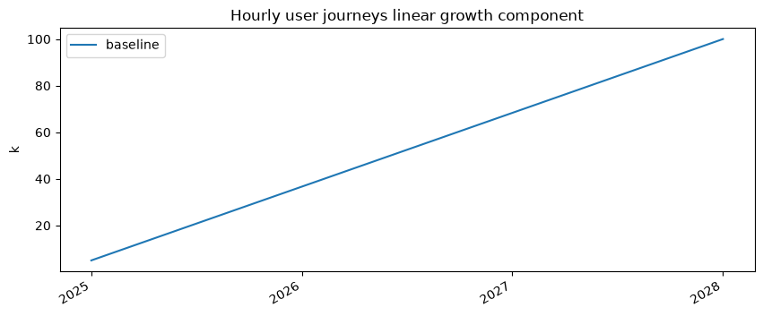
from efootprint.builders.time_builders import sinusoidal_fluct_hourly_values
sinusoidal_fluct = sinusoidal_fluct_hourly_values(
timespan, sin_fluct_amplitude=3000, sin_fluct_period_in_hours=3 * 30 * 24, start_date=start_date)
lin_growth_plus_sin_fluct = (linear_growth + sinusoidal_fluct).set_label("Hourly user journeys linear growth with sinusoidal fluctuations")
lin_growth_plus_sin_fluct.plot()
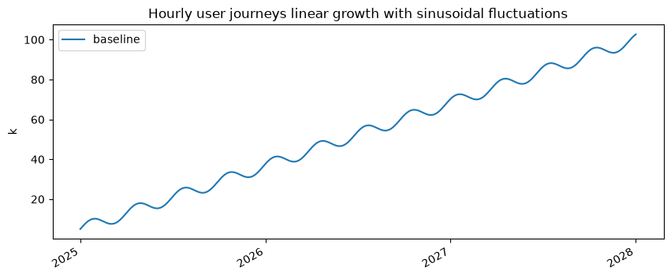
# Let’s add daily variations because people use the system less at night
from efootprint.builders.time_builders import daily_fluct_hourly_values
daily_fluct = daily_fluct_hourly_values(timespan, fluct_scale=0.8, hour_of_day_for_min_value=4, start_date=start_date)
daily_fluct.set_label("Daily volume fluctuation")
daily_fluct.plot(xlims=[start_date, start_date+timedelta(days=1)])
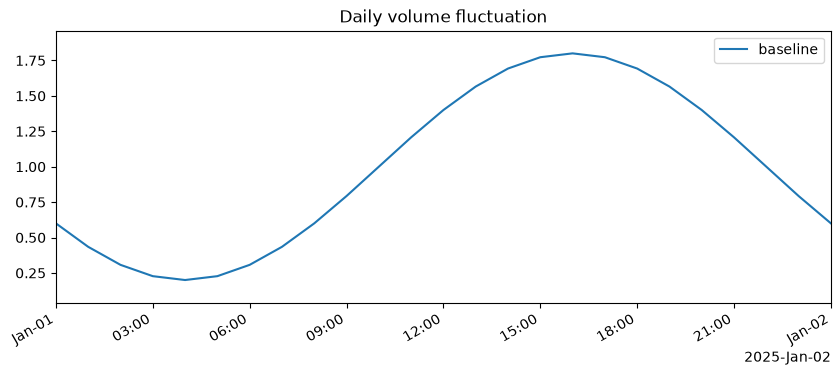
hourly_user_journey_starts = lin_growth_plus_sin_fluct * daily_fluct
hourly_user_journey_starts.set_label("Hourly number of user journey started")
hourly_user_journey_starts.plot(xlims=[start_date, start_date + timedelta(days=7)])
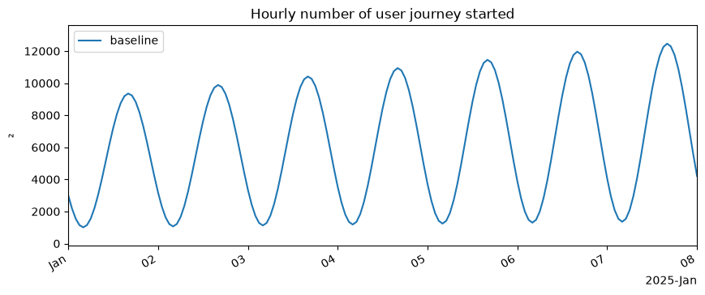
# Over 3 years the daily fluctuations color the area between daily min and max number of hourly user journeys
hourly_user_journey_starts.plot()
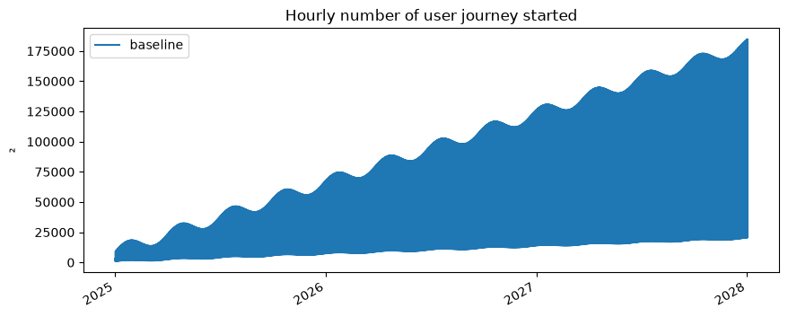
network = Network(
"WIFI network",
bandwidth_energy_intensity=SourceValue(0.05 * u("kWh/GB"), Sources.TRAFICOM_STUDY))
usage_pattern = UsagePattern(
"Daily video streaming consumption",
usage_journey=user_journey,
devices=[Device.laptop()],
network=network,
country=Countries.FRANCE(),
hourly_usage_journey_starts=hourly_user_journey_starts)
system = System("System", usage_patterns=[usage_pattern], edge_usage_patterns=[])
2026-07-02 14:21:13,008 - INFO - Starting computing System modeling
2026-07-02 14:21:13,010 - INFO - Computing calculated attributes for Country France
2026-07-02 14:21:13,011 - INFO - Computing calculated attributes for UsagePattern Daily video streaming consumption
2026-07-02 14:21:13,011 - INFO - Computing calculated attributes for UsageJourney Mean video consumption user journey
2026-07-02 14:21:13,012 - INFO - Computing calculated attributes for UsageJourneyStep 20 min streaming
2026-07-02 14:21:13,012 - INFO - Computing calculated attributes for UsageJourneyStep 1 min video capture then upload
2026-07-02 14:21:13,012 - INFO - Computing calculated attributes for Device Default laptop
2026-07-02 14:21:13,013 - INFO - Computing calculated attributes for VideoStreamingJob streaming job
2026-07-02 14:21:13,014 - INFO - Computing calculated attributes for Job upload job
2026-07-02 14:21:13,015 - INFO - Computing calculated attributes for Network WIFI network
2026-07-02 14:21:13,016 - INFO - Computing calculated attributes for Server server
2026-07-02 14:21:13,018 - INFO - Computing calculated attributes for Storage SSD storage
2026-07-02 14:21:13,020 - INFO - Computing calculated attributes for System System
2026-07-02 14:21:13,020 - INFO - Computed 50 calculated attributes over 12 objects in 0.012 seconds or 0.24 ms per computation
Results
Computed attributes
Now all calculated_attributes have been computed:
Server e8f5992d-a0e
name: server
carbon_footprint_fabrication: 600 kg
power: 300 W
lifespan: 6 yr
fraction_of_usage_time: 1
server_type: autoscaling
idle_power: 50 W
ram: 128 GB ram
compute: 24 cpu core
power_usage_effectiveness: 1.2
average_carbon_intensity: 100 g/kWh
utilization_rate: 0.9
base_ram_consumption: 300 MB ram
base_compute_consumption: 2 cpu core
fixed_nb_of_instances: no value
storage: 79bcb5be-985
calculated_attributes:
hour_by_hour_ram_need: 26298 values from 2025-01-01 00:00:00+00:00 to 2028-01-01 18:00:00+00:00: first=36.3 GB ram, last=50.1 GB ram, mean=877 GB ram, min=16.9 GB ram, max=3.08 TB ram, std=723 GB ram
hour_by_hour_compute_need: 26298 values from 2025-01-01 00:00:00+00:00 to 2028-01-01 18:00:00+00:00: first=3.47 cpu core, last=4.78 cpu core, mean=83.6 cpu core, min=1.61 cpu core, max=294 cpu core, std=69 cpu core
occupied_ram_per_instance: 2.3 GB ram
occupied_compute_per_instance: 2 cpu core
available_ram_per_instance: 113 GB ram
available_compute_per_instance: 19.6 cpu core
raw_nb_of_instances: 26298 values from 2025-01-01 00:00:00+00:00 to 2028-01-01 18:00:00+00:00: first=0.322 , last=0.444 , mean=7.77 , min=0.149 , max=27.3 , std=6.4
nb_of_instances: 26298 values from 2025-01-01 00:00:00+00:00 to 2028-01-01 18:00:00+00:00: first=1 , last=1 , mean=8.27 , min=1 , max=28 , std=6.41
instances_fabrication_footprint: 26298 values from 2025-01-01 00:00:00+00:00 to 2028-01-01 18:00:00+00:00: first=11.4 g, last=11.4 g, mean=94.3 g, min=11.4 g, max=319 g, std=73.1 g
instances_energy: 26298 values from 2025-01-01 00:00:00+00:00 to 2028-01-01 18:00:00+00:00: first=157 Wh, last=193 Wh, mean=2.83 kWh, min=105 Wh, max=9.88 kWh, std=2.3 kWh
idle_energy_footprint: 26298 values from 2025-01-01 00:00:00+00:00 to 2028-01-01 18:00:00+00:00: first=6 g, last=6 g, mean=49.6 g, min=6 g, max=168 g, std=38.4 g
load_energy_footprint: 26298 values from 2025-01-01 00:00:00+00:00 to 2028-01-01 18:00:00+00:00: first=9.66 g, last=13.3 g, mean=233 g, min=4.48 g, max=820 g, std=192 g
energy_footprint: 26298 values from 2025-01-01 00:00:00+00:00 to 2028-01-01 18:00:00+00:00: first=15.7 g, last=19.3 g, mean=283 g, min=10.5 g, max=988 g, std=230 g
System footprint overview
Impact breakdown
e-footprint tracks impact repartition at each link in the object relationship chain, so you can have a complete understanding of where impact comes from both from a material and functional point of view.
from efootprint.utils.impact_repartition.sankey import ImpactRepartitionSankey
sankey = ImpactRepartitionSankey(
system,
# For each column in the Sankey diagram, nodes representing less than aggregation_threshold_percent% of total impact
# are aggregated.
aggregation_threshold_percent=1,
# Allows for skipping certain object classes to simplify the diagram.
skipped_impact_repartition_classes=None,
# Specific columns have their own toggles.
skip_phase_footprint_split=False, skip_object_category_footprint_split=False, skip_object_footprint_split=False,
# It is also possible to exclude altogether certain object types from the total.
excluded_object_types=None,
# Also, it possible to filter on a specific life cycle phase.
lifecycle_phase_filter=None,
display_column_information=True,
node_label_max_length=6
)
sankey.figure(filename="Full impact repartition sankey.html", height=600, width=800, notebook=True)
2026-07-02 14:21:13,280 - INFO - Function build took 7.4 ms to execute.
2026-07-02 14:21:13,309 - INFO - Function figure took 36.6 ms to execute.
# Skipping certain classes (defined as strings or efootprint class objects) simplifies the view, for example
skipped_classes = ["System", "JobBase", "UsagePattern"]
sankey2 = ImpactRepartitionSankey(
system,
aggregation_threshold_percent=1,
skipped_impact_repartition_classes=skipped_classes,
skip_phase_footprint_split=False, skip_object_category_footprint_split=False,
skip_object_footprint_split=False, excluded_object_types=None, lifecycle_phase_filter=None,
display_column_information=True,
node_label_max_length=6
)
sankey2.figure(filename="Full impact repartition sankey skip jobs and usage patterns.html", height=600, width=800, notebook=True)
2026-07-02 14:21:13,317 - INFO - Function build took 3.7 ms to execute.
2026-07-02 14:21:13,338 - INFO - Function figure took 24.8 ms to execute.
# Now let’s exclude user devices and focus on usage phase
from efootprint.core.lifecycle_phases import LifeCyclePhases
sankey3 = ImpactRepartitionSankey(
system,
aggregation_threshold_percent=1,
skipped_impact_repartition_classes=skipped_classes,
skip_phase_footprint_split=False, skip_object_category_footprint_split=False,
skip_object_footprint_split=False, excluded_object_types=["Device"], lifecycle_phase_filter=LifeCyclePhases.USAGE,
display_column_information=True,
node_label_max_length=6
)
sankey3.figure(filename="Usage impact repartition sankey skip jobs and usage patterns exclude devices.html",
height=400, width=800, notebook=True)
2026-07-02 14:21:13,343 - INFO - Function build took 1.5 ms to execute.
2026-07-02 14:21:13,359 - INFO - Function figure took 17.5 ms to execute.
Besides the Sankey diagram, the attribution layer can be queried directly: attributed_footprint returns any object's share of the system footprint for a given life cycle phase.
from efootprint.core.attribution import attributed_footprint
# For example, the usage phase footprint attributed to the usage pattern
attributed_footprint(usage_pattern, LifeCyclePhases.USAGE).plot(cumsum=True)
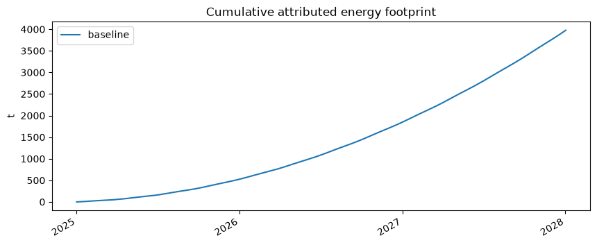
Object relationships graph
Hover over a node to get the numerical values of its environmental and technical attributes. For simplifying the graph the Network and Hardware nodes are not shown.
from efootprint.utils.object_relationships_graphs import USAGE_PATTERN_VIEW_CLASSES_TO_IGNORE, INFRA_VIEW_CLASSES_TO_IGNORE
usage_pattern.object_relationship_graph_to_file("object_relationships_graph_up_view.html", width="800px", height="500px",
classes_to_ignore=USAGE_PATTERN_VIEW_CLASSES_TO_IGNORE, notebook=True)
usage_pattern.object_relationship_graph_to_file("object_relationships_graph_infra_view.html", width="800px", height="500px",
classes_to_ignore=INFRA_VIEW_CLASSES_TO_IGNORE, notebook=True)
usage_pattern.object_relationship_graph_to_file("object_relationships_graph_all_objects.html", width="800px", height="500px",
classes_to_ignore=[], notebook=True)
Calculus graph
Any e-footprint calculation can generate its calculation graph for full auditability. Hover on a calculus node to display its formula and numeric value.
usage_pattern.devices[0].instances_fabrication_footprint.calculus_graph_to_file(
"device_population_fab_footprint_calculus_graph.html", width="800px", height="500px", notebook=True)
Plotting an object’s hourly and cumulated CO2 emissions
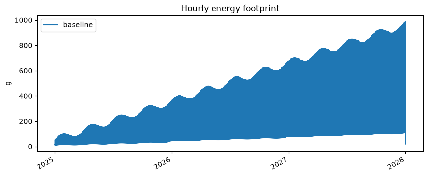
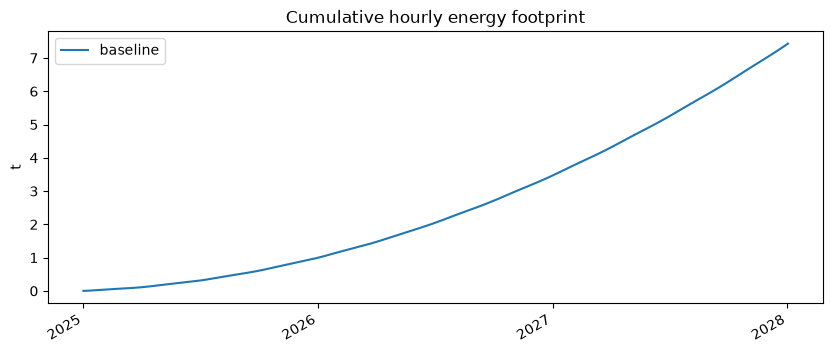
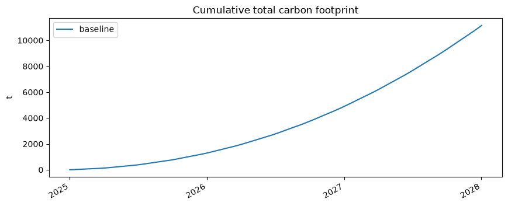
Analysing the impact of a change
Numeric input change
Any input change automatically triggers the computation of calculations that depend on the input. For example, let’s say that the average data download consumption of the streaming step decreased because of a change in default video quality:
2026-07-02 14:21:14,119 - INFO - 1 changes lead to 16 update computations done in 3.3 ms (avg 0.21 ms per computation).
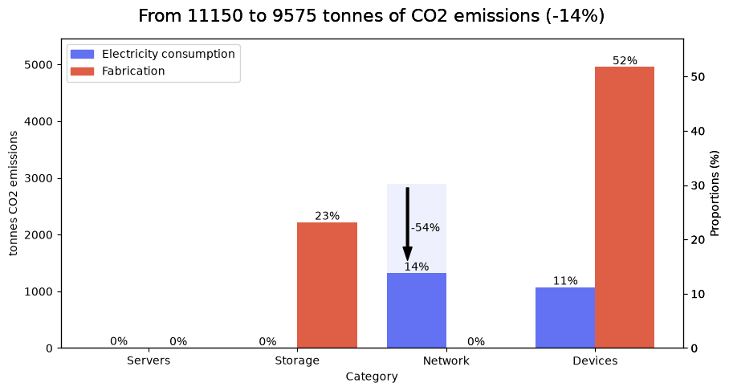
System structure change
Now let’s make a more complex change, like adding a conversation with a generative AI chatbot before streaming the video. We will use e-footprint’s EcoLogitsGenAIExternalAPI object that runs EcoLogits’s LLM impact computations.
from efootprint.builders.external_apis.ecologits.ecologits_external_api import EcoLogitsGenAIExternalAPI, EcoLogitsGenAIExternalAPIJob
genai_external_api = EcoLogitsGenAIExternalAPI(
"Openai’s gpt-4o", provider=SourceObject("openai"), model_name=SourceObject("gpt-4o"))
genai_job = EcoLogitsGenAIExternalAPIJob("LLM API call", genai_external_api, output_token_count= SourceValue(1000 * u.dimensionless))
llm_chat_step = UsageJourneyStep(
"Chat with LLM to select video", user_time_spent=SourceValue(1 * u.min, Sources.HYPOTHESIS),
jobs=[genai_job])
# Adding the new step is simply a dict entry addition; the value is how many times the step occurs per journey.
user_journey.uj_steps[llm_chat_step] = SourceValue(1 * u.dimensionless)
usage_pattern.object_relationship_graph_to_file("object_relationships_graph_with_genai_infra_view.html", width="800px", height="500px",
classes_to_ignore=INFRA_VIEW_CLASSES_TO_IGNORE, notebook=True)
2026-07-02 14:21:14,288 - INFO - Computing calculated attributes for EcoLogitsGenAIExternalAPI Openai’s gpt-4o
2026-07-02 14:21:14,291 - INFO - Optimized modeling object computation chain from 25 to 12 modeling object calculated attributes recomputations.
2026-07-02 14:21:14,292 - INFO - 13 recomputed objects: ['Mean video consumption user journey', '20 min streaming', '1 min video capture then upload', 'Chat with LLM to select video', 'Default laptop', 'streaming job', 'upload job', 'LLM API call', 'WIFI network', 'server', 'Openai’s gpt-4o server', 'SSD storage', 'System']
2026-07-02 14:21:14,301 - INFO - 1 changes lead to 74 update computations done in 10.9 ms (avg 0.15 ms per computation).
system.plot_footprints_by_category_and_object("System footprints with external gen AI API.html", notebook=True)
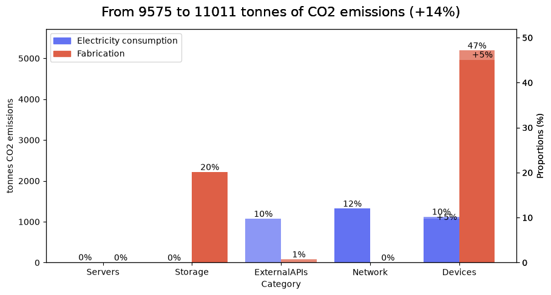
We can see that server energy footprint has gone from almost zero to more than 1500 tonnes CO2eq, and that the rest of the impact is quite negligible. Good to know to make informed decisions ! Of course the impact is very much dependent on assumptions. Let’s check out the external api server’s carbon intensity of electricity for example:
0.384 kg/kWh
# And let’s look at global impact repartition over both lifecycle phases
sankey4 = ImpactRepartitionSankey(
system,
aggregation_threshold_percent=1,
skipped_impact_repartition_classes=skipped_classes,
skip_phase_footprint_split=True, skip_object_category_footprint_split=False,
skip_object_footprint_split=False, excluded_object_types=None, lifecycle_phase_filter=None,
display_column_information=True,
node_label_max_length=6
)
sankey4.figure(filename="Full impact repartition sankey with external API skip jobs and usage patterns.html",
height=600, width=800, notebook=True)
2026-07-02 14:21:14,641 - INFO - Function build took 9.2 ms to execute.
2026-07-02 14:21:14,660 - INFO - Function figure took 29.0 ms to execute.
Recap of all System changes
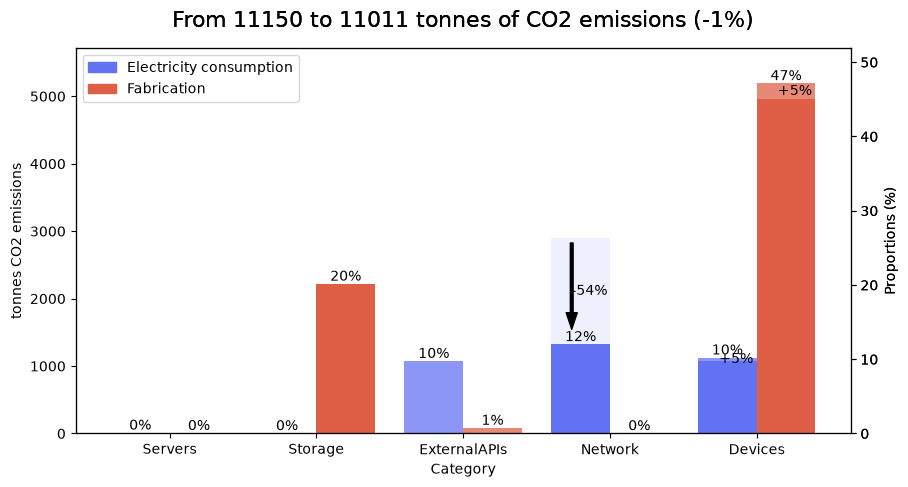
Making simulations of changes in the future
We’ve seen that you can make changes in your modeling and analyse the differences, but most likely the changes you’re contemplating will happen at some point in the future. Let’s model a change in the future thanks to e-footprint’s ModelingUpdate object !
# Let’s first revert the system to its state before changes
# We can make optimized batch changes by using the ModelingUpdate object, that is also used to make simulations of changes in the future
from efootprint.abstract_modeling_classes.modeling_update import ModelingUpdate
ModelingUpdate([
[user_journey.uj_steps, {streaming_step: SourceValue(1 * u.dimensionless), upload_step: SourceValue(1 * u.dimensionless)}],
[streaming_job.resolution, SourceObject("1080p (1920 x 1080)")]
])
system.plot_footprints_by_category_and_object("System footprints after reset.html", notebook=True)
2026-07-02 14:21:14,850 - INFO - Optimized modeling object computation chain from 25 to 12 modeling object calculated attributes recomputations.
2026-07-02 14:21:14,850 - INFO - 13 recomputed objects: ['Mean video consumption user journey', 'Chat with LLM to select video', '20 min streaming', '1 min video capture then upload', 'Default laptop', 'LLM API call', 'streaming job', 'upload job', 'WIFI network', 'server', 'Openai’s gpt-4o server', 'SSD storage', 'System']
2026-07-02 14:21:14,851 - INFO - Optimized update function chain from 90 to 74 calculations
2026-07-02 14:21:14,858 - INFO - 2 changes lead to 74 update computations done in 10.2 ms (avg 0.14 ms per computation).
# To create a simulation, which is a change in the future, simply set ModelingUpdate’s simulation_date parameter
import pytz
simulation = ModelingUpdate([[user_journey.uj_steps,
{streaming_step: SourceValue(1 * u.dimensionless),
upload_step: SourceValue(1 * u.dimensionless),
llm_chat_step: SourceValue(1 * u.dimensionless)}]],
simulation_date=pytz.utc.localize(start_date) + timedelta(days=365))
2026-07-02 14:21:14,892 - INFO - Optimized modeling object computation chain from 25 to 12 modeling object calculated attributes recomputations.
2026-07-02 14:21:14,892 - INFO - 13 recomputed objects: ['Mean video consumption user journey', '20 min streaming', '1 min video capture then upload', 'Chat with LLM to select video', 'Default laptop', 'streaming job', 'upload job', 'LLM API call', 'WIFI network', 'server', 'Openai’s gpt-4o server', 'SSD storage', 'System']
2026-07-02 14:21:14,900 - INFO - Simulation specific operations done.
2026-07-02 14:21:14,909 - INFO - Resetting direct changes from 1 updated values
2026-07-02 14:21:14,913 - INFO - Resetting filtered hourly quantities from 2 updated values
2026-07-02 14:21:14,920 - INFO - Resetting replaced ancestors copies from 53 updated values
2026-07-02 14:21:14,926 - INFO - Resetting recomputed values from 74 updated values
2026-07-02 14:21:14,929 - INFO - 1 changes lead to 74 update computations done in 38.0 ms (avg 0.51 ms per computation).
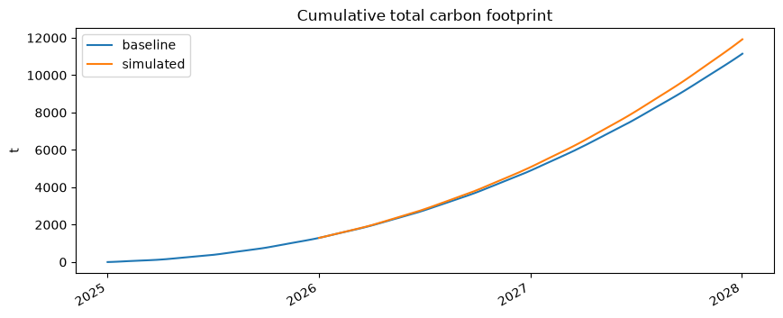

# The system state is reset to baseline after the simulation.
# For example, our LLM server has no energy footprint since it is not used in the baseline modeling
genai_external_api.server.energy_footprint
no value
# To set simulation values, use ModelingUpdate’s set_updated_values method
simulation.set_updated_values()
genai_external_api.server.energy_footprint
2026-07-02 14:21:15,174 - INFO - Setting direct changes from 1 previous values
2026-07-02 14:21:15,175 - INFO - Setting filtered hourly quantities from 2 previous values
2026-07-02 14:21:15,176 - INFO - Setting replaced ancestors copies from 53 previous values
2026-07-02 14:21:15,177 - INFO - Setting recomputed values from 74 previous values
17538 values from 2026-01-01 00:00:00+00:00 to 2028-01-01 18:00:00+00:00: first=12.7 kg, last=2.33 kg, mean=53 kg, min=2.33 kg, max=143 kg, std=34.1 kg
# Conversely, pre-update values are reset using ModelingUpdate’s reset_values method
simulation.reset_values()
genai_external_api.server.energy_footprint
2026-07-02 14:21:15,190 - INFO - Resetting direct changes from 1 updated values
2026-07-02 14:21:15,191 - INFO - Resetting filtered hourly quantities from 2 updated values
2026-07-02 14:21:15,191 - INFO - Resetting replaced ancestors copies from 53 updated values
2026-07-02 14:21:15,193 - INFO - Resetting recomputed values from 74 updated values
no value
[Optional] Model edge devices
The above modeling reflects a centralized web logic: the input usage is a business input (typically, the number of visits on a website), and the infrastructure has to be sized to meet the demand. But there are cases where the usage is actually proportional to a number of devices, typically when trying to model the impact of selling digital devices, like servers, smartphones or video game consoles. In this case, e-footprint edge objects allow for the description of usage per device, and number of devices sold / produced over the modeling period.
Define the edge device
The EdgeStorage and EdgeDevice objects are similar to the Storage and Server objects, but simpler because they don’t have to include any autoscaling logic.
from efootprint.core.hardware.edge.edge_storage import EdgeStorage
from efootprint.builders.hardware.edge.edge_computer import EdgeComputer
edge_storage = EdgeStorage(
"Edge SSD storage",
carbon_footprint_fabrication_per_storage_capacity=SourceValue(160 * u.kg / u.TB_stored),
lifespan=SourceValue(6 * u.years),
storage_capacity_per_unit=SourceValue(256 * u.GB_stored),
base_storage_need=SourceValue(10 * u.GB_stored),
)
edge_computer = EdgeComputer(
"Edge device",
carbon_footprint_fabrication=SourceValue(60 * u.kg),
power=SourceValue(30 * u.W),
lifespan=SourceValue(8 * u.year),
idle_power=SourceValue(5 * u.W),
ram=SourceValue(16 * u.GB_ram),
compute=SourceValue(8 * u.cpu_core),
base_ram_consumption=SourceValue(1 * u.GB_ram),
base_compute_consumption=SourceValue(0.1 * u.cpu_core),
storage=edge_storage
)
Define the edge usage journey with the processes that run on the edge device
The EdgeUsageJourney object associate a list of RecurrentEdgeProcesses to an EdgeDevice object, over a usage span. The RecurrentEdgeProcess object describes the usage of compute, RAM and storage on the EdgeDevice object by describing hourly usage in a canonical week starting at midnight on a Monday local time.
import numpy as np
from pint import Quantity
from efootprint.abstract_modeling_classes.source_objects import SourceRecurrentValues
from efootprint.builders.usage.edge.recurrent_edge_process import RecurrentEdgeProcess
from efootprint.core.usage.edge.edge_function import EdgeFunction
from efootprint.core.usage.edge.edge_usage_journey import EdgeUsageJourney
edge_process = RecurrentEdgeProcess(
"Edge process",
edge_device=edge_computer,
recurrent_compute_needed=SourceRecurrentValues(
Quantity(np.array([1] * 168, dtype=np.float32), u.cpu_core)), # 7 * 24 = 168 hours in the canonical week
recurrent_ram_needed=SourceRecurrentValues(
Quantity(np.array([2] * 168, dtype=np.float32), u.GB_ram)),
recurrent_storage_needed=SourceRecurrentValues(
Quantity(np.array([200] * 168, dtype=np.float32), u.kB_stored))
)
# edge functions are analogous to usage journey steps in that they allow the grouping of edge processes that serve the same purpose.
edge_function = EdgeFunction("Edge function", recurrent_edge_device_needs=[edge_process],
# Server needs will be presented in the next section
recurrent_server_needs=[])
edge_usage_journey = EdgeUsageJourney(
"Edge usage journey",
edge_functions=[edge_function],
usage_span=SourceValue(6 * u.year)
)
Define the edge usage pattern
The EdgeUsagePattern object specifies the number of edge devices that are emitted in a given countrey across time, through its hourly_edge_usage_journey_starts parameter. It could be for example the sales projection of a video game console seller. It is then linked to a System through System’s edge_usage_patterns parameter, just like web usage patterns are linked to a System through the usage_patterns parameter. That way, web and edge objects can coexist in the same simulation.
from efootprint.builders.time_builders import create_hourly_usage_from_frequency
from efootprint.core.usage.edge.edge_usage_pattern import EdgeUsagePattern
edge_usage_pattern = EdgeUsagePattern(
"Edge usage pattern",
edge_usage_journey=edge_usage_journey,
network=Network.wifi_network(),
country=Countries.FRANCE(),
hourly_edge_usage_journey_starts=create_hourly_usage_from_frequency(
timespan=5 * u.year, input_volume=10, frequency='weekly',
active_days=[0, 1, 2, 3, 4, 5], hours=[9, 10, 11, 12, 15, 16, 17, 18, 19])
)
system.edge_usage_patterns = [edge_usage_pattern]
system.plot_footprints_by_category_and_object("System with edge objects footprints.html", notebook=True)
2026-07-02 14:21:15,263 - INFO - Optimized modeling object computation chain from 47 to 24 modeling object calculated attributes recomputations.
2026-07-02 14:21:15,264 - INFO - 24 recomputed objects: ['France', 'France', 'Daily video streaming consumption', 'Mean video consumption user journey', '20 min streaming', '1 min video capture then upload', 'Default laptop', 'Edge usage pattern', 'Edge usage journey', 'Edge function', 'Edge process', 'Edge process RAM need', 'Edge process CPU need', 'Edge process storage need', 'Edge device RAM', 'Edge device CPU', 'Edge SSD storage', 'Edge device', 'streaming job', 'upload job', 'WIFI network', 'server', 'SSD storage', 'System']
2026-07-02 14:21:15,276 - INFO - 1 changes lead to 122 update computations done in 14.6 ms (avg 0.12 ms per computation).
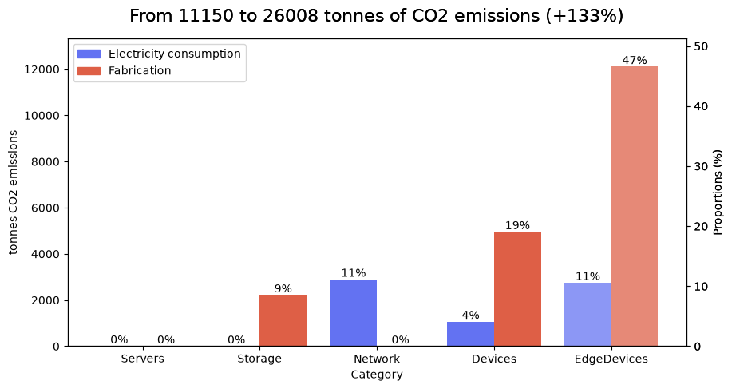
system.object_relationship_graph_to_file("system_with_edge_objects_graph_up_view.html", width="800px", height="500px",
classes_to_ignore=USAGE_PATTERN_VIEW_CLASSES_TO_IGNORE, notebook=True)
system.object_relationship_graph_to_file("system_with_edge_objects_graph_infra_view.html", width="800px", height="500px",
classes_to_ignore=INFRA_VIEW_CLASSES_TO_IGNORE, notebook=True)
[Optional] define requests made to web servers
RecurrentServerNeed objects allow for the description of recurrent requests made to a web server by an edge device. The recurrent volume will be multiplied by the number of edge device deployed, and will apply to the all the RecurrentServerNeed jobs (which can be used by other RecurrentServerNeeds, or even within WebUsageJourneySteps).
from efootprint.core.usage.edge.recurrent_server_need import RecurrentServerNeed
# Let’s create a new, simple server with default values
server = Server.from_defaults("New server", storage=Storage.from_defaults("New storage"))
# 2 jobs are triggered every hour, for each hour of the typical week
recurrent_volume = SourceRecurrentValues(np.array([2.0] * 168, dtype=np.float32) * u.occurrence)
job = Job.from_defaults("Job on new server", server=server)
server_need = RecurrentServerNeed(
"Server need",
edge_device=edge_computer,
recurrent_volume_per_edge_device=recurrent_volume,
jobs=[job])
edge_function.recurrent_server_needs.append(server_need)
2026-07-02 14:21:15,738 - INFO - Optimized modeling object computation chain from 28 to 14 modeling object calculated attributes recomputations.
2026-07-02 14:21:15,739 - INFO - 15 recomputed objects: ['Edge function', 'Edge process', 'Server need', 'Edge process RAM need', 'Edge process CPU need', 'Edge process storage need', 'Edge device RAM', 'Edge device CPU', 'Edge SSD storage', 'Edge device', 'Job on new server', 'Default wifi network', 'New server', 'New storage', 'System']
2026-07-02 14:21:15,752 - INFO - 1 changes lead to 103 update computations done in 15.6 ms (avg 0.15 ms per computation).
system.object_relationship_graph_to_file("system_with_edge_objects_graph_infra_view_with_server_job.html", width="800px", height="500px",
classes_to_ignore=INFRA_VIEW_CLASSES_TO_IGNORE, notebook=True)